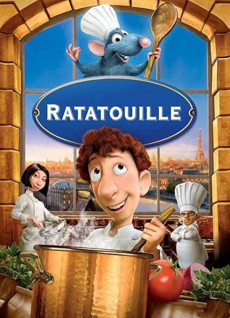
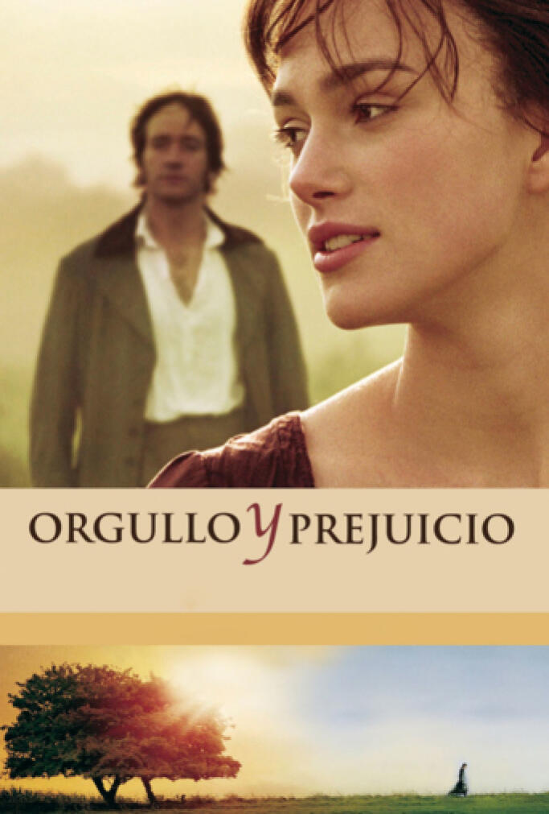
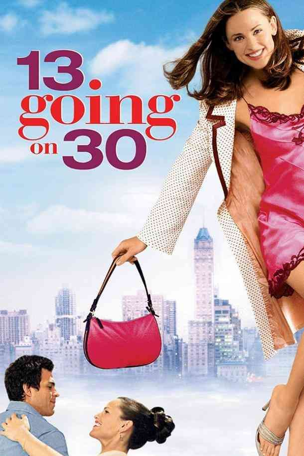

Ratatouille
Remy es una rata que aprecia la buena comida y tiene un paladar bastante sofisticado.
Su sueño es convertirse algún día en un gran chef francés a pesar de la oposición de su familia.
El destino lleva a Remy a las alcantarillas de París, donde su situación no puede ser mejor, ya que se encuentra justo debajo de uno de los restaurantes más finos de París.
El roedor se sentirá en el lugar perfecto para convertir su sueño en una realidad.

Orgullo y prejuicio
Orgullo y prejuicio es una película británica del año 2005 del género romántico basada en la novela
homónima de Jane Austen publicada en 1813. La película, basada en un guion de Deborah Moggach, fue
producida por Working Title Films y dirigida por Joe Wright.
En la Inglaterra de finales del siglo XVIII, los Bennett buscan marido para sus hijas. Lo que en un
principio parece un bonito romance entre Lizzie, la hermana mayor, y el señor Darcy, un acaudalado
joven que acaba de mudarse a la mansión vecina, acaba convirtiéndose en una batalla de sexos.

Si tuviera 30
Por su trece cumpleaños, todo lo que Jenna Rink desea es ser guapa y popular. Tras una experiencia
humillante con un grupo de chicas delante del chico más popular de la escuela, Jenna hace un deseo
desesperado por tener una nueva vida. Milagrosamente su deseo se hace realidad, sólo que han pasado
diecisiete años y ella es una niña de trece años en el cuerpo de una joven de treinta.
